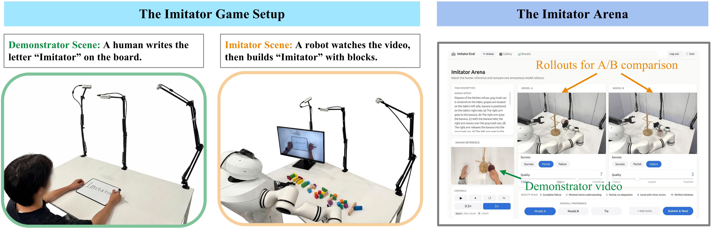
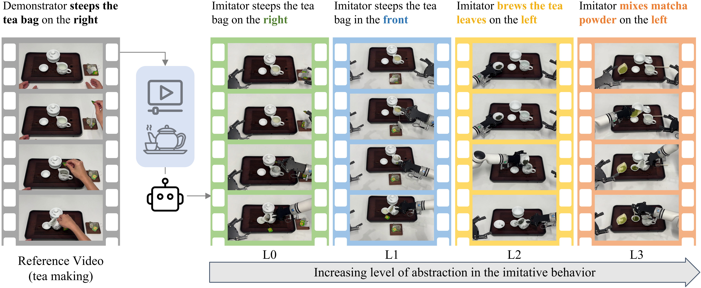
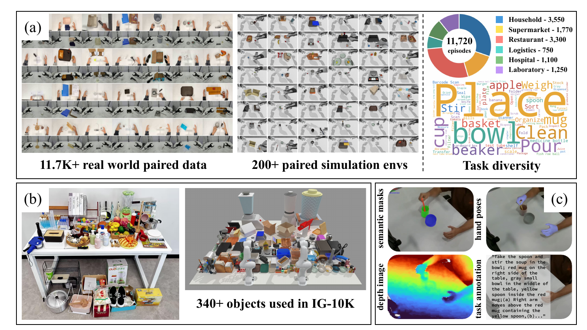
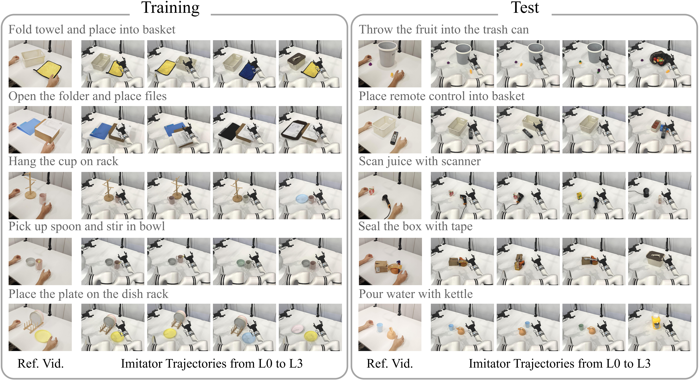

The Imitator Game
The Imitator Game
Benchmarking Robot Imitative Ability Beyond Action Prediction
Can robots imitate what a human intends — not just what they do? We introduce a four-level benchmark, a 20,000+ episode paired dataset, and an open human evaluation platform to find out.
assets/media/demo_video.mp4 to enable.
Humans imitate at the level of intent: given a demonstration, we infer its goal and carry it out with whatever tools, objects, and layouts are at hand. Current robot policies instead learn observation-to-action mappings from visual inputs and language instructions, without explicitly inferring the demonstrated task. Learning from human video thus remains largely trajectory-level: models can replay motions in near-identical scenes, but still struggle to imitate what the demonstrator intends rather than merely what they do. We introduce The Imitator Game, a four-level benchmark (L0–L3) that progressively widens the gap between the human demonstration and the robot's own scene, isolating where trajectory replay ceases to suffice and task understanding becomes necessary. We pair it with IG-10K, the largest environment-aligned paired human–robot dataset to date and the only one instantiated across all four levels in both real and simulated settings (20,000+ paired episodes, 50+ tasks, 6 domains), and Imitator Arena, an open platform for blind A/B human evaluation. Across nine state-of-the-art models, performance is stable from L0 to L2 but collapses at L3, identifying functional substitution — achieving the same intent through a different object affordance — as the decisive barrier to intent-level imitation.

Increasing abstraction of imitation
Each task is instantiated at four levels of progressive mismatch between the human demonstration and the robot's scene — from exact replay (L0) to intent-level affordance substitution (L3).
REF Human Reference
Every comparison starts from a human demonstrator video recorded in the Demonstrator Scene. This reference video is shown to the robot imitator — and to human Arena evaluators — as the sole specification of what should be reproduced. There is no separate task description, goal predicate, or symbolic instruction.
assets/media/levels/human_ref.mp4
L0 Trajectory Imitation
The imitator scene is identical to the demonstrator scene — same objects, same layout. The policy is expected to reproduce the demonstrated trajectory.
assets/media/levels/l0.mp4
L1 Object End-State Imitation
Same objects, but their spatial configuration has changed. A literal replay of the demonstrated trajectory would fail. The policy must achieve the same final object states via a different path.
assets/media/levels/l1.mp4
L2 Semantic Task Imitation
At least one task-relevant object has changed in appearance or geometry, but its semantic category is preserved. The precise final states are no longer reproducible, but the semantic task remains achievable.
assets/media/levels/l2.mp4
L3 Affordance-Adapted Imitation
The demonstrated object is replaced by one of different semantics and function. The policy must infer the underlying intent and re-purpose a different affordance to achieve the same goal.
assets/media/levels/l3.mp4

Paired human–robot dataset at scale
The largest environment-aligned human–robot paired manipulation dataset to date, spanning real-world episodes, interactive simulation environments, and the full task distribution across six domains — with dense offline annotations.

Browse 50+ imitation tasks
Each task is instantiated at four levels of progressive difficulty — from trajectory replay (L0) to full affordance substitution (L3). Explore human reference clips, real-robot rollouts, and simulation videos side-by-side.
Imitator trajectories: Training & Test tasks
For each evaluation task, a human reference video is followed by representative imitator trajectories under increasing scene mismatch (L0 → L3). The five training tasks were included during IG-10K pretraining; the five test tasks are held-out and evaluate zero-shot transfer, from-scratch few-shot learning, and pretrain+finetune (P+FT) adaptation. Seen-task evaluation perturbs object placements across hierarchy levels, so success requires robust imitation rather than fixed-layout replay.

Experimental findings
We evaluate 9 state-of-the-art models (15 trained variants) across simulation, real-world deployment, and human Arena judgments — along three axes.
Video beats text conditioning
Video-based methods lead on seen tasks. ACT/DINOv2 reaches SR = 0.81 in simulation; XSkill wins the real-world Arena with SR = 0.63, WR = 0.89.
Data scaling is promising
Models falls below 13% zero-shot SR on unseen tasks in simulation. IG-10K pretraining unlocks few-shot gains — with benefits growing with pretraining scale.
L3 remains a decisive barrier
Performance is stable from L0 to L2 (~0.40 avg SR), then drops to 0.29 at L3. Functional substitution — achieving intent via different affordance — is unsolved frontier.
Judge the imitators yourself
The Arena shows a human reference video and two anonymous model rollouts on the same scene. Pick which one better imitates the demonstrated intent. Your votes are recorded anonymously to help rank model performance.
BibTeX
@unpublished{imitatorgame2026,
title = {The Imitator Game: Benchmarking Robot Imitative Ability Beyond Action Prediction},
author = {Anonymous Author(s)},
note = {Submitted to CoRL 2026, under review},
year = {2026}
}